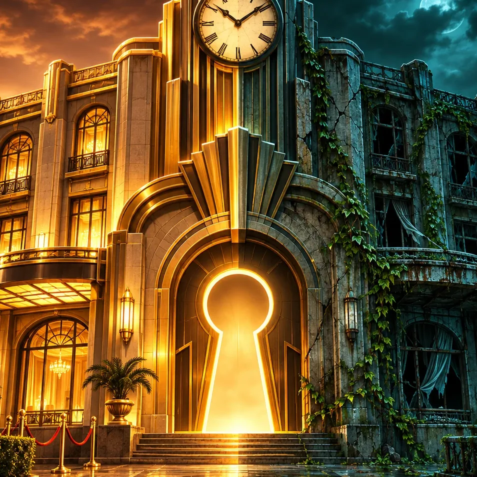
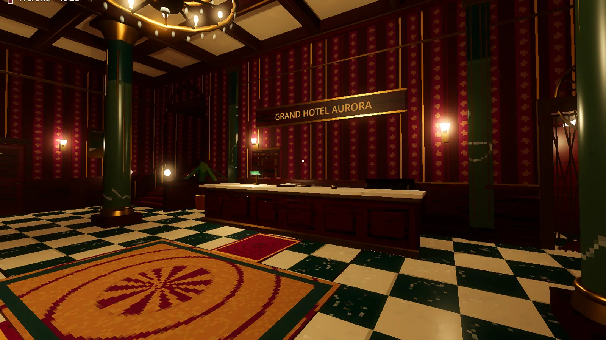
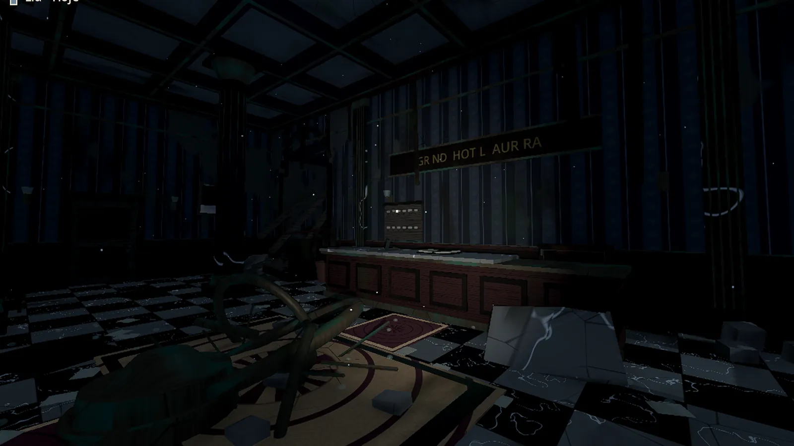
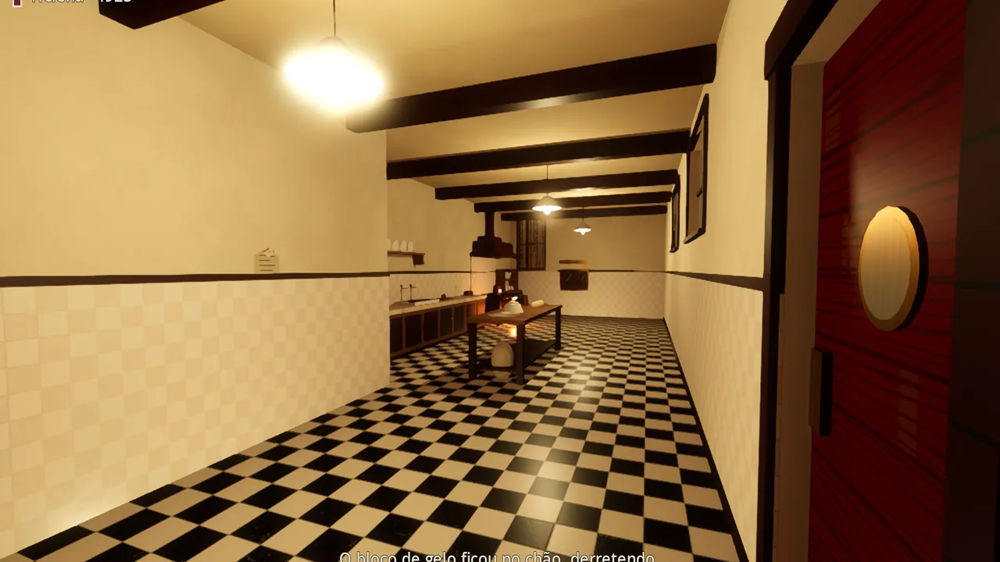
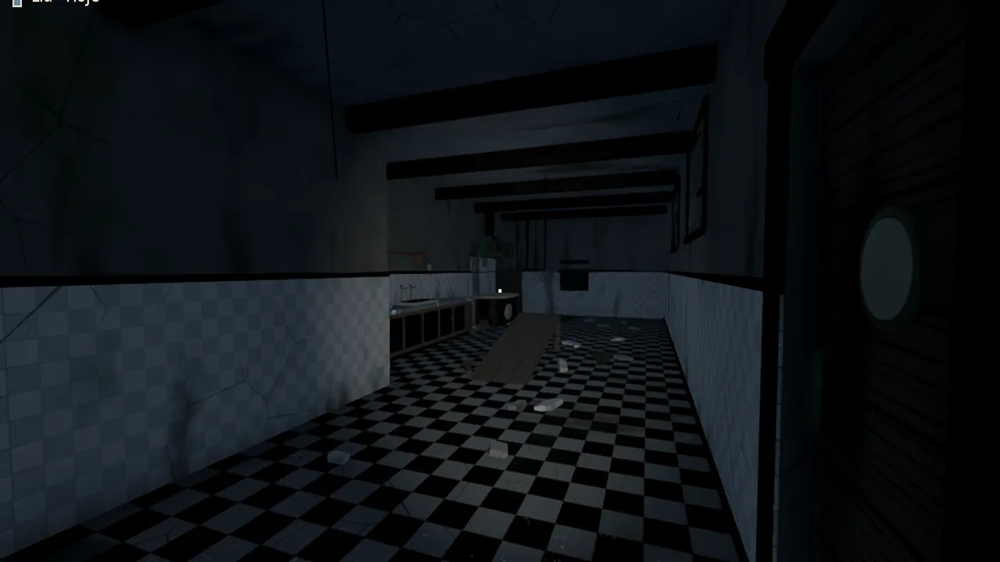
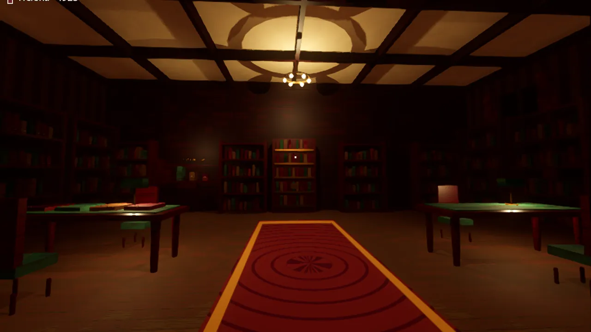
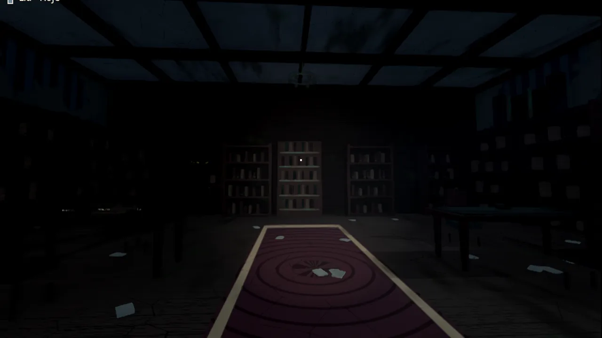

Helena
A hóspede.
Um hotel em pleno funcionamento. Uma porta que não abre. Helena move, esconde e transforma objetos que atravessarão cem anos.
O passado abre caminhos.
O presente guarda respostas.
Duas mulheres. Cem anos de distância. Um hotel que guarda mais do que memórias. Explore o Grand Hotel Aurora em um jogo de enigmas em primeira pessoa.
Baixar para WindowsWindows 10 e 11 · 64 bits · download gratuito
Conheça o hotel
Grand Hotel Aurora O tempo passa. Ele permanece.
Em 1923, o Aurora vive o auge do luxo. Hoje, restam o silêncio, as ruínas e os vestígios de quem passou por aqui.
Arraste a linha dourada e atravesse o tempo.


1923HojeO mesmo lugar. Outros caminhos. Cada época revela uma parte do mistério.


1923HojeO que ficou no passado transforma o caminho de hoje.


1923HojeHá respostas que só sobrevivem se alguém as guardar.
No modo solo, uma tecla leva você aos olhos da outra personagem. Elas nunca se falam. A ligação entre as duas é o que o tempo deixa para trás.
A hóspede.
Um hotel em pleno funcionamento. Uma porta que não abre. Helena move, esconde e transforma objetos que atravessarão cem anos.
A bisneta.
Uma lanterna nas ruínas. Lia procura a bisavó desaparecida e encontra pistas na tinta descascada, nas anotações e naquilo que resistiu ao tempo.
Uma pessoa desapareceu em cada geração. A cada andar, um nome. A cada nome, outra peça da história.
Quem será a próxima
assinatura no livro?
Registro de hóspedes e funcionários
| Entrada | Nome | Saída |
|---|---|---|
| 1923 | OtíliaCozinheira | Não registrada |
| 1951 | Dr. Caio FerrazMédico · quarto 214 | Não registrada |
| 1979 | Marta SiqueiraFotógrafa | Não registrada |
| 2003 | Tomás ReisExplorador | Não registrada |
| Hoje | LiaÀ procura de Helena | ? |
A última assinatura ainda está úmida.
Cada pessoa joga com uma personagem, no próprio computador. O que Helena muda em 1923 transforma o que Lia vê hoje. Conversem, comparem as pistas e encontrem o caminho.
Sem criar conta ou configurar o roteador. O anfitrião pode salvar o progresso da dupla e retomar depois.
Entre no Aurora. Atravesse o tempo.
Descubra o que ficou para trás.
Windows 10 e 11 · 64 bits · download gratuito
Ver todas as versõesHotelSemSaida.exe.Não precisa de instalador. O jogo roda no Windows; esta página apresenta a experiência e oferece o download.
Você pode ajustar a qualidade gráfica nas configurações do jogo.
Baixe o ZIP uma vez. Quando houver uma nova versão, a recepção do jogo mostra Atualizar. O jogo baixa o que mudou e reinicia para instalar.
Sim. Você controla Helena e Lia e troca de época com Tab. Cada personagem fica na sala e na posição em que você a deixou. A dupla online é opcional.